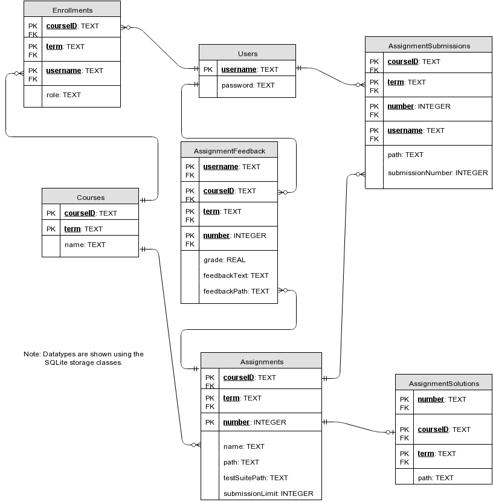

Database Schema

- Users
- Description: A student, marker, or instructor. Supports database storage of users (of any role).
- Direct Relations:
- Users to Enrollments: One-to-many.
- Users to AssignmentSubmissions: One-to-many.
- Primary Key:
- username: A unique identity of each user
- Additional Fields:
- password: A unique identifier used to authenticate a user
- Courses
- Description: Supports database storage of system courses.
- Direct Relations:
- Courses to Enrollments: One-to-many.
- Courses to Assignments: One-to-many.
- Primary Key:
- courseID: A string containing a course's subject, number, and section number.
- term: A string containing the time of year and term one specific instance of a course is offered.
- Additional Fields:
- Enrollments
- Description: Enrollments affiliate a user with a specific class.
- Direct Relations:
- Enrollments to Users: Many-to-one.
- Enrollments to Courses: Many-to-one.
- Primary Key:
- Foreign Keys:
- Additional Fields:
- role: The role with which the person designated by the enrollment is associated with the course (i.e. Student, Marker, or Instructor).
- Assignments
- Description: A set of problems to which students may submit answers.
- Direct Relations:
- Assignments to Courses: Many-to-one.
- Assignments to AssignmentSolutions: One-to-one.
- Assignments to AssignmentSubmissions: One-to-many.
- Primary Key:
- Foreign Keys:
- Additional Fields:
- path: The location at which the system has stored the file (or the files) of which the assignment consists.
- name: The name of the assignment.
- submissionLimit: The number of submissions a given student is allowed to make for the assignment.
- testSuitePath: The location a which the system has stored a test suite related to the assignment and accessible to the course's students (if one exists).
- AssignmentSubmissions
- Description: A student's submitted answers to a single assignment's questions.
- Direct Relations:
- AssignmentSubmissions to Users: Many-to-one.
- AssignmentSubmissions to Assignments: Many-to-one.
- Primary Key:
- username
- courseID
- term
- number
- Foreign Keys:
- username
- courseID
- term
- number
- Additional Fields:
- path: The location at which the system has stored the file (or files) which make up the student's assignment submission.
- submissionNumber: An index number that keeps track of the number of submissions a student makes for each assignment.
- grade: The mark received by the student for the assignmentSubmission.
- AssignmentSolutions
- Description: An answer key to an assignment.
- Direct Relations:
- AssignmentSolutions to Assignments: One-to-one.
- Primary Key:
- Foreign Keys:
- Additional Fields:
- path: The location at which the system has stored the file(s) of which the solution consists.